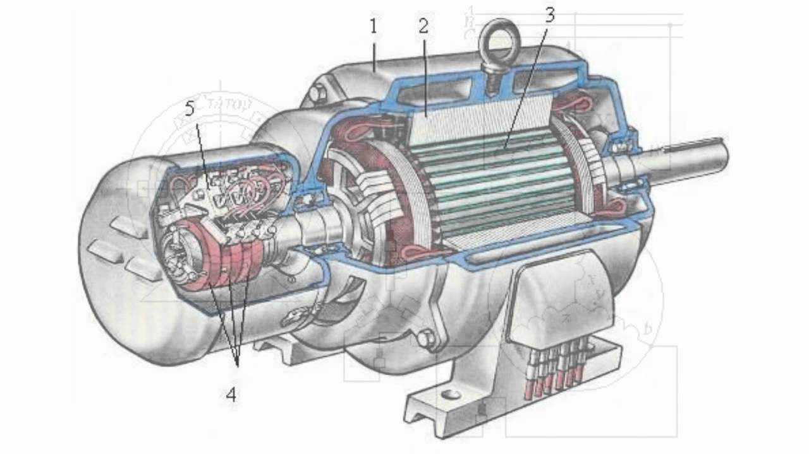

Трехфазный асинхронный двигатель
- Конструкция асинхронного электродвигателя
- Принцип работы трехфазного двигателя
- Скольжение асинхронного двигателя
- 
Конструкция асинхронного электродвигателя
Трехфазный асинхронный электродвигатель, как и любой электродвигатель, состоит из двух основных частей -
статора и ротора
.
Статор
- неподвижная часть.Ротор
- вращающаяся часть. Ротор размещается внутри статора. Между ротором и статором имеется небольшое расстояние, называемое воздушным зазором, обычно 0,5-2 мм.Статор
Статор состоит из корпуса и сердечника с обмоткой. Сердечник статора собирается из тонколистовой технической стали толщиной обычно 0,5 мм, покрытой изоляционным лаком. Шихтованная конструкция сердечника способствует значительному снижению вихревых токов, возникающих в процессе перемагничивания сердечника вращающимся магнитным полем. Обмотки статора располагаются в пазах сердечника.
Ротор
Ротор состоит из сердечника с короткозамкнутой обмоткой и вала. Сердечник ротора тоже имеет шихтованную конструкцию. При этом листы ротора не покрыты лаком, так как ток имеет небольшую частоту и оксидной пленки достаточно для ограничения вихревых токов.
Принцип работы. Вращающееся магнитное поле
Принцип действия трехфазного асинхронного электродвигателя основан на способности трехфазной обмотки при включении ее в сеть трехфазного тока создавать вращающееся магнитное поле.